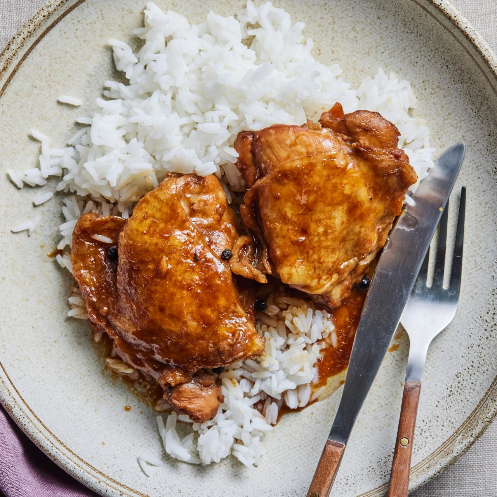

Adobo Recipe

Description
A Filipino dish of pork or chicken stewed in a marinade
of vinegar, soy sauce, garlic, herbs, and spices; considered the unofficial
national dish of the Philippines.
Ingredients
- 2 tablespoons vegetable oil
- 1 (3 pound) chicken, cut into pieces
- 1 large onion, quartered and sliced
- 2 tablespoons minced garlic
- ⅔ cup low sodium soy sauce
- ⅓ cup white vinegar
- 1 tablespoon garlic powder
- 2 teaspoons black pepper
- 1 bay leaf
Steps
-
Heat vegetable oil in a large skillet over medium-high heat.
Cook chicken pieces until golden brown, 2 to 3 minutes per side.
Transfer chicken to a plate and set aside.
-
Add onion and garlic to the skillet; cook until softened and brown,
about 6 minutes.
-
Pour in soy sauce and vinegar and season with garlic powder,
black pepper, and bay leaf.
-
Return chicken to pan, increase heat to high, and bring to a boil.
Reduce heat to medium-low, cover, and simmer until chicken is tender
and cooked through, 35 to 40 minutes.